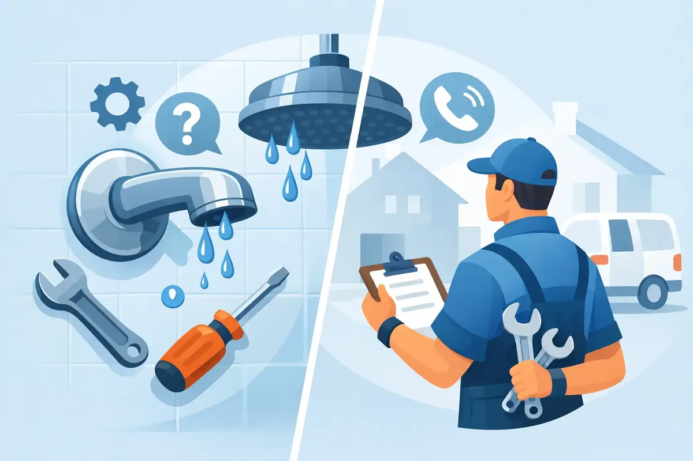

A need for shower faucet repair in Woodbury, TN, often starts with a small annoyance: a steady drip after the handle is off, a shower that suddenly runs cold, or a handle that takes both hands to turn. Those symptoms may seem minor, but a worn faucet can waste water, damage the valve behind the wall, and turn a normal morning routine into a stressful surprise.
The good news is that many shower faucet problems can be repaired without replacing the entire shower. The key is identifying what has failed, knowing when to shut off the water, and calling a qualified plumber before a hidden leak causes damage where you cannot see it.
Common Signs Your Shower Faucet Needs Repair
A dripping showerhead is the complaint most homeowners notice first. If water continues to run after the handle is fully off, the internal cartridge, stem, washer, or seat may no longer create a watertight seal. The drip may be slow at first, but it rarely corrects itself.
Temperature problems are another common concern. When a shower swings from hot to cold, will not get warm enough, or becomes dangerously hot without warning, the pressure-balancing or thermostatic cartridge may be worn out. This is more than a comfort issue. Unpredictable hot water can create a scalding risk for children, older adults, and anyone with limited mobility.
A stiff, loose, or slipping handle also deserves attention. Mineral buildup can make a handle difficult to turn, while a stripped adapter or damaged stem can cause the handle to spin without properly controlling water flow. If you hear water running behind the wall, see moisture near the trim plate, or find staining on the ceiling below the bathroom, treat the situation as urgent. A concealed leak can damage drywall, framing, flooring, and insulation long before it becomes visible.
What Causes Shower Faucet Problems?
Most shower faucets have moving parts that work hard every day. The cartridge inside a modern single-handle valve directs hot and cold water and regulates flow. Over time, normal wear, sediment, and mineral deposits can damage its seals or interfere with movement. In older two-handle faucets, rubber washers, O-rings, stems, and valve seats are frequent sources of leaks.
Water quality can play a role as well. Hard water leaves mineral scale on showerheads and inside fixture components. Scale may reduce water flow, make handles harder to operate, and shorten the useful life of cartridges. A clogged showerhead is sometimes the simple answer to low pressure, but low flow throughout the shower can also point to a failing valve, a partially closed stop, or a larger plumbing concern.
Faucet age matters, too. A replacement part may be an excellent, cost-effective repair when the valve body is sound and the manufacturer still supports that model. If a valve is badly corroded, parts are discontinued, or the fixture has failed repeatedly, replacement may be the wiser long-term choice. It depends on what is behind the wall, the condition of the trim, and the homeowner's goals for the bathroom.
Safe First Steps Before Shower Faucet Repair in Woodbury TN
Before removing a handle or trim plate, protect the home and avoid turning a small repair into a flood. Start by confirming whether the water is coming from the showerhead, the handle area, or inside the wall. If the leak is active when the faucet is off, do not ignore it overnight.
If you plan to inspect the fixture, shut off water to the shower using local service stops if your valve has them. If it does not, use the home's main water shutoff. Open the faucet afterward to relieve pressure, then cover the drain so screws and small parts do not disappear into the pipe.
Homeowners can usually clean mineral buildup from an accessible showerhead or tighten a loose external screw. Beyond that, caution is wise. Faucet cartridges look simple, but removing one can be difficult when corrosion has locked it in place. Using too much force can damage the valve body behind the wall, and that repair can require opening tile or drywall.
Avoid applying random lubricants or forcing the handle. Also, do not assume every cartridge is interchangeable. Delta, Moen, Kohler, Pfister, and other manufacturers use different designs, and even similar-looking parts may not fit correctly. A plumber can identify the fixture, source the correct part, and make sure hot and cold water are operating safely when the repair is complete.
When a Repair Is the Right Choice
Repair is often the best answer when the faucet leak comes from a worn cartridge, washer, O-ring, or handle component. Replacing the failed internal part can restore smooth operation and stop water waste without changing the visible fixture. This is especially practical when the existing trim matches the bathroom and the valve body is in good condition.
A professional repair should include more than stopping the obvious drip. The plumber should test water temperature, check handle operation, inspect the trim for evidence of moisture, and make sure the valve does not leak after cycling on and off. If the shower has a pressure-balancing feature, it should be tested so temperature stays more consistent when someone flushes a toilet or starts a washing machine.
For landlords and property managers, prompt faucet repair protects both the property and the resident experience. A dripping fixture can lead to higher utility use, frustrated tenants, and preventable water damage. Addressing it early is usually less disruptive than waiting for a behind-the-wall leak.
When Replacement Makes More Sense
Replacement becomes worth considering when a faucet has recurring failures, parts are no longer available, or the valve body is cracked or severely corroded. It may also be a good opportunity during a bathroom remodel, when the wall is already open and access is easier.
There is a trade-off. Replacing only the trim may improve appearance, but it does not always solve a problem inside an aging valve body. Replacing the complete valve creates a more dependable foundation, yet it can involve opening the wall and matching existing tile or finishes. A straightforward inspection and upfront estimate help homeowners choose based on safety, cost, and expected service life rather than guesswork.
If the shower is hard to regulate or has no effective anti-scald protection, upgrading to a modern pressure-balancing or thermostatic valve can offer meaningful peace of mind. This is particularly valuable in busy family homes where several fixtures may run at once.
Why Professional Shower Faucet Repair Matters
A shower valve sits at the intersection of water supply lines, finished walls, and daily family use. A repair that looks successful at first can still leak behind the wall if a cartridge is not seated correctly, a retaining clip is not secure, or the valve body is damaged. That is why experience matters.
Angle Stop Plumbing brings 31 years of plumbing experience to repairs across Middle Tennessee, with respectful service, upfront pricing, and a workmanship warranty. Homeowners should be able to ask questions, understand their options, and feel comfortable with the technician working in their home. Our family-friendly No Foul Language Guarantee reflects the same respect we bring to the repair itself.
For an active leak, water coming through a ceiling, or a shower that will not shut off, turn off the main water supply if it is safe to do so and call for emergency plumbing help. A fast response can limit damage and help protect the rest of the home.
A shower faucet should be easy to use, safe for every member of the household, and quiet once it is turned off. Taking care of that first drip or temperature change now can keep your bathroom comfortable and help you avoid a much larger repair later.